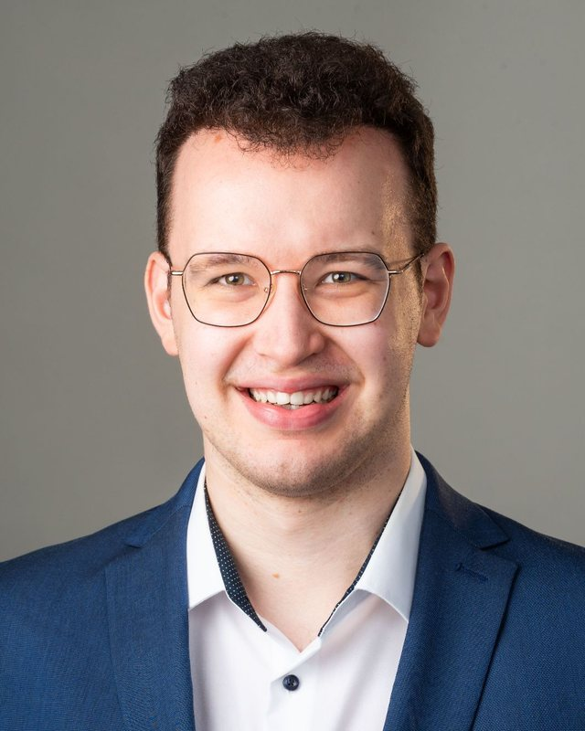

Work in progress: this page is an AI-generated draft and hasn't been reviewed yet.

hi, I'm
Marcel Horstmann
Physicist turned consultant. I work on data and AI in financial services and like building things that hold up in the real world.
About
I studied physics in Jena and Heidelberg, where I wrote my master's thesis on heavy-quark diffusion in functional QCD. Since 2023 I have been a consultant at d-fine, working on data and regulatory projects for banks, insurers and trading firms: testing and acceptance of platform migrations, data engineering with Python, SQL and Databricks, and making the results understandable for the people who have to decide.
A lot of that work is what AI teams call evals: test catalogues, quality gates, root-cause analysis and evidence that stands up to an audit. I use AI agents every day and I'm most interested in AI that actually reaches the people using it.
Outside work you'll find me at CrossFit, at the run club or reading physics textbooks for fun.